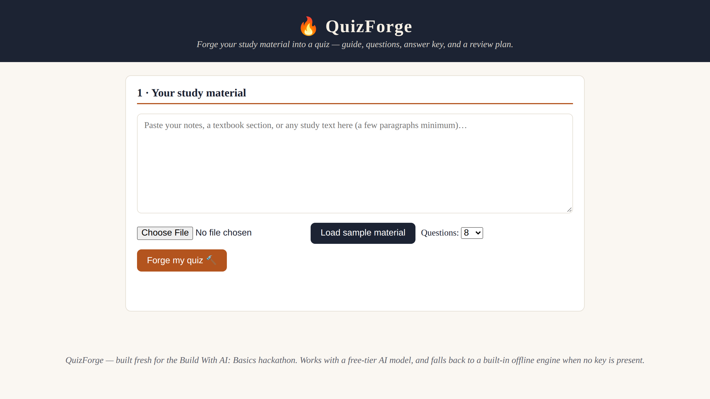
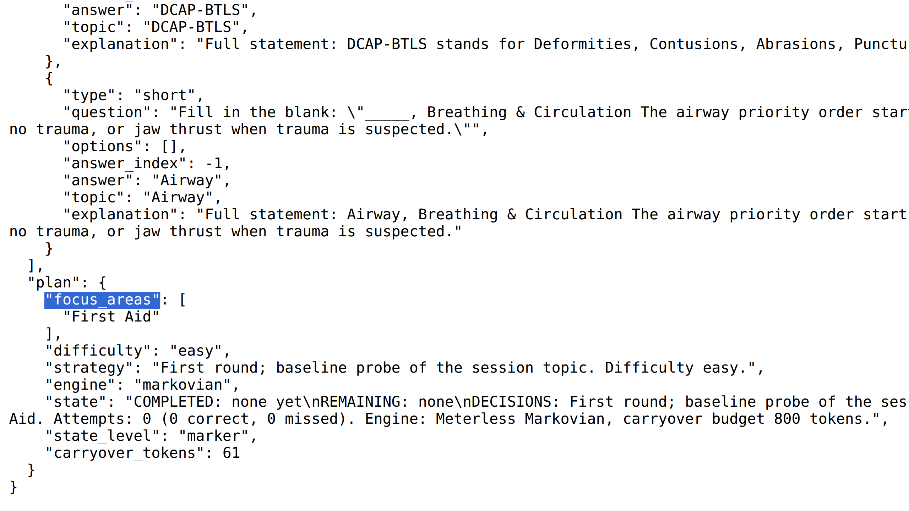
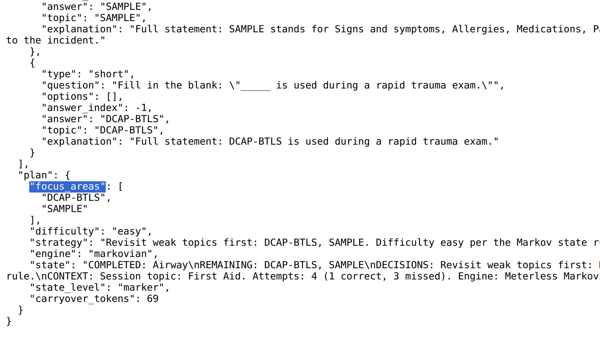
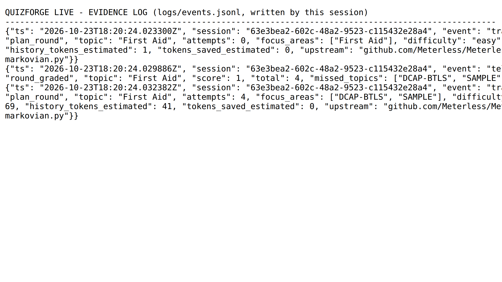

GenAI Works Open Agent Hackathon 2026 · Wildcard [Tinkerer]
QuizForge Live
The study agent that remembers what you missed.
Paste any study material — it plans a round, generates the questions, grades your answers, and adapts what comes next.
David Scott Cain · solo · Team HackOS
Built on QuizForge (v1, Build With AI: Basics, submitted Oct 23, 2026) — all Live work is new in this event window.
Demo video: 2 minutes · Repo: github.com/dcain2336/quizforge-live
1 · Problem + target users
Quizzes forget the learner
- The problem: re-reading notes feels like studying but builds weak recall. One-shot quiz tools generate once, grade once, and adapt never — the learner's history evaporates between sessions.
- The scaling trap: an agent that re-reads the full history every round pays O(n²) context — planning gets slower and dumber as the learner improves.
- Target users: students and certification candidates studying from their own texts — our filmed demo uses a first-responder exam excerpt (scene safety, SAMPLE, OPQRST, DCAP-BTLS).
- Also: tutors and self-learners who need quizzes grounded in their material, plus an inspectable record of what the agent decided and why.
2 · Solution
A study loop, not a quiz generator
- QuizForge Live turns any pasted study material into a live agent loop: PLAN → GENERATE → GRADE → ADAPT, round after round.
- Each plan is decided from a bounded learner state — mastered topics, remaining (weak) topics, strategy, difficulty — carried by the Meterless Markovian engine, never the raw history.
- Every miss returns an evidence-backed explanation that cites the study source; missed topics resurface next round until mastered.
- Every decision is inspectable: JSONL evidence (plan traces, grade telemetry, metered model calls) plus
/api/usage and /api/status endpoints.
- The full loop runs keyless and offline; model routes enrich it when configured — it never blocks on credentials.
3 · Agent workflow / architecture
Plan → generate → grade → adapt
PLANagent.py + markovian.py fold graded history into the canonical state block (COMPLETED / REMAINING / DECISIONS / CONTEXT), compress it to an 800-token budget, and decide focus + difficulty.
→
GENERATEThe v1 QuizForge engine builds the round's questions from the material (LLM chain, then an offline engine that always works).
→
GRADEAnswers graded on the spot; explain.py attaches an evidence-backed explanation, citing the study sources, to every miss.
→
ADAPTMissed topics land in the state's REMAINING list as telemetry — the next plan targets exactly them. Loop repeats.
When a model route is configured, Nemotron refines the plan — prompted with the bounded state via the engine's build_prompt, its reply marker-parsed and shape-validated, with the engine plan as the fallback. Metering (meterless.py) records every call and event as JSONL either way.
4 · Technical stack
Zero dependencies, stdlib only
- Runtime: Python 3 standard library only — no pip installs, no build step;
python3 app.py serves the UI and API on port 8765.
- Modules:
app.py (HTTP API) · agent.py (the loop) · markovian.py (Meterless engine port) · generator.py (v1 engine) · nemotron.py (model routes) · explain.py (cited explanations) · zetaris.py (data-harness client) · meterless.py (JSONL evidence).
- Models: NVIDIA Nemotron (
nvidia/nemotron-3.5-super-vl:free) via Nightshift locally or OpenRouter's free tier.
- Data layer: Zetaris REST — Bearer + X-Org-ID + X-Request-ID, SQL via
POST /sql-editor/sqls/run.
- Tests: 27 deterministic offline tests (engine bounds, compression cascade, behavior change, env routing, full loop) —
python3 -m unittest discover -s tests.
5 · How Zetaris and Meterless were used
Sponsor technology, honestly labeled
- Meterless — integrated and load-bearing. The Markovian engine is ported from the open-source specs (Apache-2.0) and decides every plan; the Nightshift route is implemented (OpenAI-compatible
/v1/chat/completions) and env-gated via METERLESS_BASE_URL / METERLESS_RUNTIME_TOKEN — Nightshift is local-install software with no hosted endpoint, so it activates on a participant machine.
- Zetaris — client built, preflight-gated. The full REST layer is implemented and verified against Zetaris's own public getting-started scripts, with their
SELECT 1 preflight pattern. The organizers' participant instance is still a TBC placeholder (no URL or key issued), so until one exists the corpus runs on the offline local-corpus fallback — and /api/status says exactly that.
- Cursor — not used. The organizers confirmed any coding tool is allowed and included no free Cursor credits in this event; we state this rather than claim it.
6 · What was unique about the sponsor-tech use
We didn't call the engine — we became it
- A faithful port, not a wrapper: upstream ships the Markovian engine as an implementation spec + TypeScript reference ("not a runtime library"), so
markovian.py re-implements its core — config bounds, the [STATE_CHECKPOINT] marker protocol, the 4-level carryover cascade — in stdlib Python, with provenance and an honest adaptation list in the file header.
- Learner state as a Markov chain: topics transition weak → mastered by explicit rules. In the filmed session the carried state was 69 tokens; the measured saving at 3 full chunks is 48,000 → 26,400 tokens (45%), growing with history — and the logs report 0 saved when a history is too small to save anything.
- Evidence as a feature: judges can replay every state transition from
logs/events.jsonl. The demo's round-2 focus change is provable from the log, not just narrated over video.
- Honesty as design:
/api/status exposes which sponsor pieces are live, gated, or fallback — no vaporware claims anywhere in the product.
7 · Product visuals (1 of 2)
The product, running offline

The app: paste any study material (or load the bundled first-responder sample). One command runs it — no installs, no keys required.

Round 1 (live API response): the Markovian plan — focus "First Aid", easy baseline probe, state COMPLETED: none yet — with the round's questions above it.
7 · Product visuals (2 of 2)
The adaptation, and its proof

Round 2's plan targets exactly the missed topics — focus: DCAP-BTLS, SAMPLE — decided from the state block: COMPLETED: Airway · REMAINING: DCAP-BTLS, SAMPLE (69 carryover tokens).

The session's evidence log (logs/events.jsonl): a trace per plan, telemetry for the graded round (score 1/4, missed topics recorded) — every state transition replayable.
8 · Future enhancements
Where Live goes next
- Live Zetaris corpus the moment a participant instance is issued: ingest a second source mid-session and watch the next round draw on it, with per-source provenance in explanations.
- Nightshift on the participant's machine (or a DGX Spark): local Nemotron planning through the already-built route; model checkpoints already parsed and kept as evidence.
- More Meterless engines: H-MEM for cross-session learner memory; Scout Intent to route across a multi-subject study library.
- Spaced repetition from the state: schedule reviews straight off the REMAINING list (v1's review plan meets the Markovian state), plus cohort/class mode and Anki export.
- A Live tab in the UI that plays rounds in the browser against the same API the demo films.
QuizForge Live
Plan · Generate · Grade · Adapt
Run it: python3 app.py → http://localhost:8765 — the whole loop works with no keys at all.
Repo: github.com/dcain2336/quizforge-live · Tests: 27 offline, all passing · License: MIT
GenAI Works Open Agent Hackathon 2026 · Wildcard [Tinkerer] · David Scott Cain (solo, team HackOS)
Pre-existing base: QuizForge v1 (declared). New in this event: the agent loop, the Markovian engine port, the Zetaris REST layer, the Nightshift route, and the JSONL evidence trail.